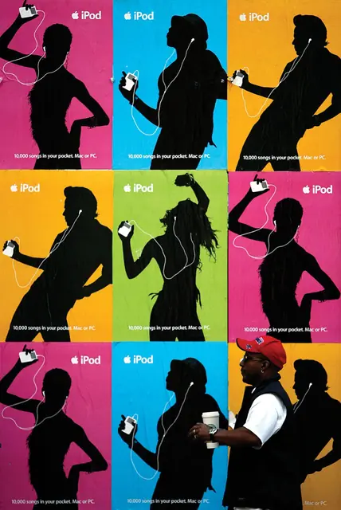
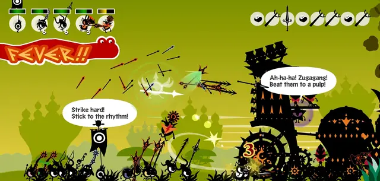
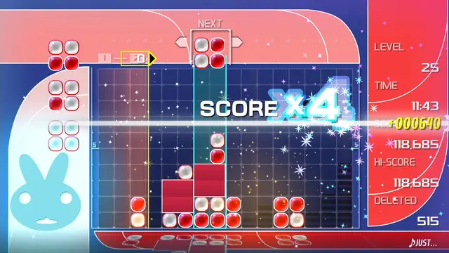
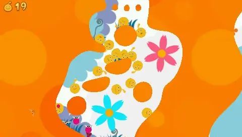
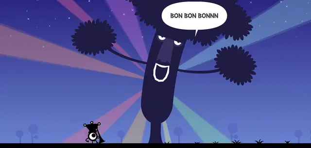
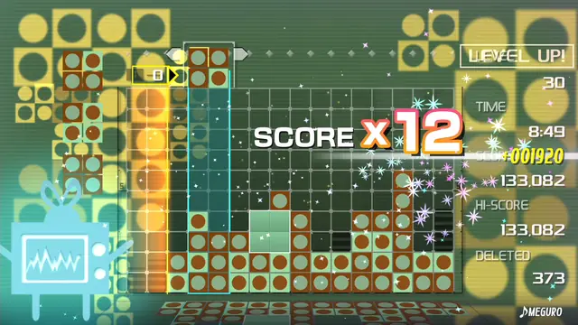
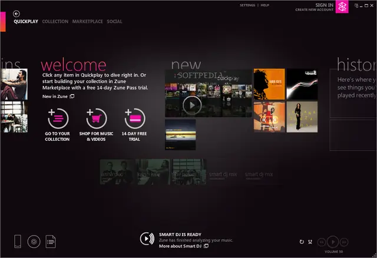
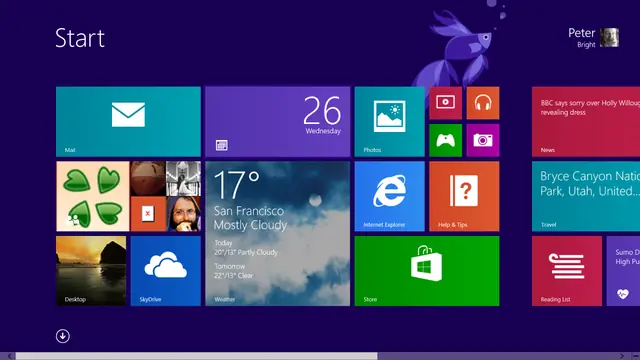

The feel
The iPod silhouette ads are about how music "quite literally moves us", not about the product: faceless dancers, almost no copy, and white headphones that pop as they bounce around.1 The rest of the style is vector ornament: overlapping circles, lightning bolts, stripy lines and swirls,2 with floral themes and gradient blocks.3
It sells a feeling instead of a feature list: judging the campaign for the Kelly Awards, Mike Hughes said it showed "you don't have to spend a lot of time talking about features to get people to make a human connection with your product".4 Its art director, Susan Alinsangan, was after "that authenticity of somebody dancing to what moves them".5 Patapon gets the same pull in a game from little eyeball warriors who march when you drum.6
- loud
- on-the-beat
- teen-marketed
- swirly
- flat-but-glossy
- MP3-player-cool
Where it comes from
The name is recent: Frutiger Aero itself had no name until 2018, and Emirhan Avcı describes Frutiger Metro as its minimalist, vector-based offshoot, named after the flat Metro interface of Windows 8.3 The look is older: TBWA\Chiat\Day's silhouette posters for the iPod broke in 2003,7 after art director Susan Alinsangan saw a man wearing an iPod gyrate across the street while she was driving.5 Lumines was built for the launch of Sony's PSP, with each skin's music and visuals designed together,8 and Patapon (2007) grew out of the French artist Rolito's Flash drawings of eyeball creatures.6 The Zune HD set its menus in large lowercase type, which became the centre of Windows Phone and the backbone of Windows 8.9
Core elements
Black silhouettes on flat colour
Figures are solid black on one flat colour: the 2003 iPod posters set silhouettes of young people grooving to their iPods against fuchsia, purple, green, yellow and hot pink.7 The dancers stay faceless,1 except in the U2 spot, where Apple let some of Bono's face show through.10
Vector swirls and rings
Swirls were common enough to download ready-made, as vectors or Photoshop brushes,11 and Spoon Graphics paired them with stacks of concentric circles in alternating colours.2 By early 2008 designers were tired of the look, and Ian Anderson of The Designers Republic promised "less swirly, lovely gear".12
Circle-based characters
Game characters are a few simple shapes: Patapon's began as Rolito's Flash drawings of creatures "made only of circles, no ornamentation",6 and LocoRoco's art director chose a flat design with a super matte finish to show how soft its round characters are.13
Visuals synced to music
The picture is made with the music: in Lumines each skin and its track were designed simultaneously, and the time line sweeps the field in time with the beat.8 In Patapon every command is a drum rhythm, and the Patapons sing it back.6
Typography-led interfaces
Type does the work of icons: the Zune HD's home screen is text only, with its main functions in large, lowercase Segoe.9 Microsoft's Metro designers made "Celebrate Typography" a principle, because "type is information, type is beautiful".14
Flat vectors with subtle shine
The shapes are flat vectors with a touch of light: Abduzeedo gives each swirl a highlight and a dark area with Illustrator's Mesh tool,11 and Spoon Graphics burns in subtle shadows at 20% exposure.2 Avcı counts shiny textures among the style's elements and calls it a transitional step in the shift to flat design.3
How to do it
Cut out a dancer
Pick a photo of someone you can extract from the background without much work, and test a rough cut first, because some images don't look good as silhouettes.10 Fill the cut-out with black over a flat background in one of the ads' own colours: #1379F9, #9369BF, #F59110, #9FCC39 or #EB5297.10 Add a white iPod and draw the cord as a 5 px white line.15 A 0.2 px Gaussian Blur softens jagged edges, and a very soft shadow near the feet matches almost every ad.10
Draw swirls from blended circles
Draw two circles, one large and one small, and blend between them with the spacing at its minimum.2 Draw a curve and make it the spine the blend follows, then repeat with other curves and directions.2 Abduzeedo spaces the blend at 1 pt with each step aligned to the path, and a spiral makes a good spine.11
Stack concentric rings
Copy a circle, paste the copy in front and scale it down from the centre in proportion, alternating colours as you go.2 Group each set, duplicate it, then scale and position the copies into a stack, and keep the whole piece to cyan, magenta and yellow.2
Set one tempo for every track
Patapon keeps every track at the same tempo, a 120 BPM march, and finds its variety inside it.6 Lumines divides its field into 16 sections and moves the time line in eighth notes, so one sweep lasts two bars of 4/4.8
Time the beat from the audio clock
Audio is mixed in chunks, so work out the song position from the audio itself: take its playback position, add the time since the last mix, and subtract the output latency, the time the sound takes to be heard after mixing.16 A clock based on the samples the audio system has actually processed is much more precise than the game's frame time.17
Mix in stems
LocoRoco plays all its music tracks at once and mutes the parts you can't hear, so the chorus grows with the number of LocoRoco on screen.13 In Patapon a long combo earns Fever, and the music, two mixes split into three tracks, grows livelier with the state of the game.6
Build menus from type
Set menus in large lowercase type instead of icons, as the Zune HD did with Segoe.9 Cut whatever isn't content: Metro's designers put it as "Content, Not Chrome".14 For posters, Myriad Pro is the closest match to the type in the iPod ads.15
Cheat sheet
- Background
- One flat colour, such as #1379F9, #9369BF, #F59110, #9FCC39 or #EB529710
- Figure
- Solid black, white iPod, 5 px white cord15
- Swirls
- Two circles blended at 1 pt, aligned to a curved spine11
- Rings
- Concentric, alternating colours, grouped into stacks2
- Ornament colours
- Cyan, magenta and yellow2
- Tempo
- 120 BPM for every track, as in Patapon6
- Beat grid
- 16 sections, an eighth note each: two bars of 4/4, as in Lumines8
Do
- Shoot real dancing. The iPod models brought their own music, and only four of the twelve made the final campaign.5
- Design each picture and its music together, passing ideas back and forth as the Lumines team did.8
- Keep characters simple enough to read as silhouettes at small sizes. Patapon's producer says the games "live and die by the simple silhouettes of Rolito's designs".6
- Let the pictures explain. LocoRoco kept on-screen text to a minimum so it would make sense without words,13 and the iPod ads ran with almost no copy.1
Avoid
- Electric day-glo backgrounds. Jennifer Apple's iPod tutorial warns against them and gives the ads' real colours instead.10
- Ornament with nothing behind it. Early in 2008 Benjamin Cox of the Central Illustration Agency called floral, patterned vector imagery "almost pure decoration with no substance".12
- Music that waits for the player. Early Lumines held the music back unless you cleared a block on every sweep, and Katsumi Yokota says that interfered with the compositions.8
- Rhythms that are hard to hold. Many players found Patapon's irregular "don, dodon, dodon" Miracle rhythm too difficult, its producer admits.6
- Glass and imitation materials. Transparent panels and aurora visuals belong to Frutiger Aero,3 and Metro's designers avoided the skeuomorphic shading and glossiness of interfaces that mimic real materials.14
Tools and tutorials
- Inkscape: Spirals
Free spiral tool. Add Power Stroke and you have tapered swirls.
- Create a Bright Retro Grunge Vector Illustration
Chris Spooner's swirls from blended circles and stacks of concentric rings.2
- I See iPod People: The Photoshop Silhouette
Jennifer Apple's step-by-step iPod ad silhouette, with the ads' own background colours.10
- Godot: Sync the gameplay with audio
How to keep animation locked to the music clock.
- Unity: AudioSettings.dspTime
The audio clock to use for beat timing in Unity.
- Dosis
A free rounded sans with a heavy weight. It sets the titles on this page.
Palette
Sampled from the references above. This page turns them up to full brightness for its colour bands.
Feel the vibe
In motion
Listen
Played on its own skin in Lumines Remastered. Watch the time line sweep the blocks in time with the beat.8
YouTubeThe commercial itself. Watch how little happens besides silhouettes, colour changes and rhythm.
YouTubeApple used the song in an iPod TV ad in April 2008.18 Handclaps, a stomp and one chant.
YouTubeFrom the Patapon soundtrack, which keeps every track at a 120 BPM marching tempo.6
YouTubeApple's 2005 "Pop-Lock" spot: the familiar black silhouettes dancing to the track on their iPods.19
YouTube
More references








Games
- Feel the Magic: XY/XX
Sonic Team's DS launch game: silhouette characters with only their clothes and hair coloured, in flat colours,20 which GameSpot called iPod-style.21
- Lumines: Puzzle Fusion
Each skin's music and visuals were designed together.8 Study how much the background can do behind a simple grid.
- LocoRoco
A flat, super-matte look, chosen to show how soft the round characters are.13
- Patapon
Rolito's simple silhouettes, marching to the drum rhythms you play.6
Film, art and more
- iPod advertising
The dancing silhouette campaign and the songs it used.
- Zune
Microsoft's iPod rival. Its large lowercase menus became the centre of Windows Phone.9
- Metro design language
Where the name comes from, and the flat style that came next.3
- Frutiger Aero
Wikipedia's article on the parent style, with a note on Metro as a transitional look.
- The Frutiger Family History
A community timeline of Metro, its subgenres and examples.
Sources
- 12003: Apple releases its silhouette campaign for iPod
- 2Create a Bright Retro Grunge Vector Illustration
- 3Physical Reflections of Digital Aesthetics: The Influence of Frutiger Aero on Interior Design
- 4'Silhouette' Is Grand at Kelly Awards
- 5Agency TBWA\Chiat\Day, Playa del Rey, Calif.
- 6Marching to the Beat of Their Own Drum: An Interview with the Creators of Patapon
- 7Apple Pushes iPod In New Print Ads
- 8Interview: Nakamura, Yokota On The Origins Of Lumines Supernova
- 9Microsoft Zune: How one of the biggest flops in tech history helped revive a great American tech company
- 10I See iPod People: The Photoshop Silhouette
- 11Swirl Mania in Illustrator & Photoshop
- 12Trends 2008
- 13LocoRoco Creators on the Game That Made the World Smile
- 14From Transportation to Pixels
- 15How to make an iPod ad in PSE
- 16Sync the gameplay with audio and music
- 17AudioSettings.dspTime
- 18The Ting Tings In Concert
- 19Apple makes 'Pop-Lock' ad available online
- 20Feel the Magic: XY/XX
- 21Feel The Magic: XY/XX Hands-On